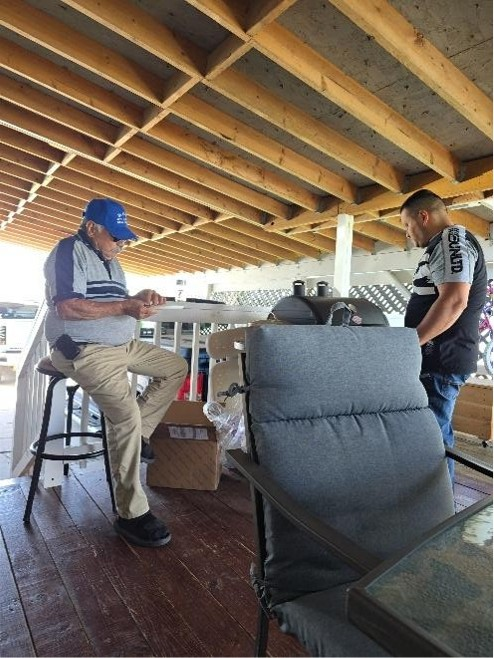
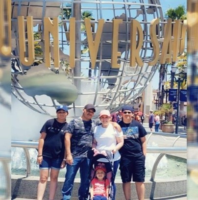
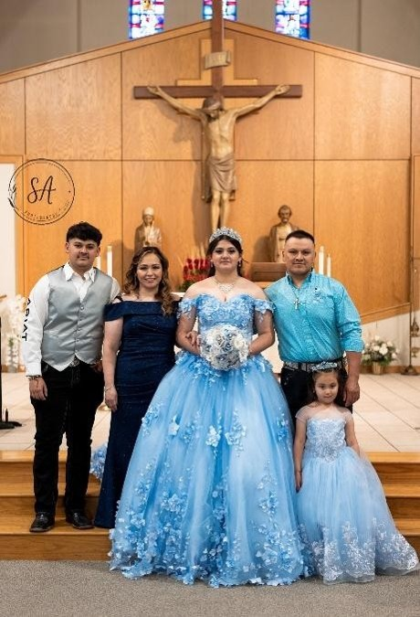
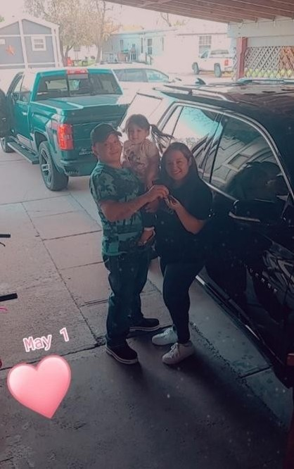

Grilling Outdoors
Faustino loves cooking for his family and friends, turning every meal into a celebration of love and laughter.

Family Trips
Traveling together is one of his favorite ways to create lasting memories and share new experiences.

Celebrations
From birthdays to quinceañeras, Faustino treasures every moment spent with his loved ones.

Mother’s Day
Faustino loves surprising his wife with thoughtful gifts and gestures that show his appreciation.
